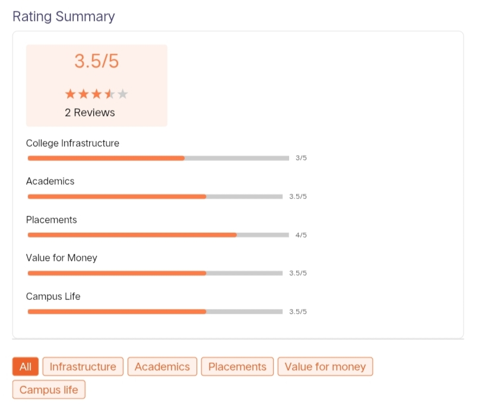
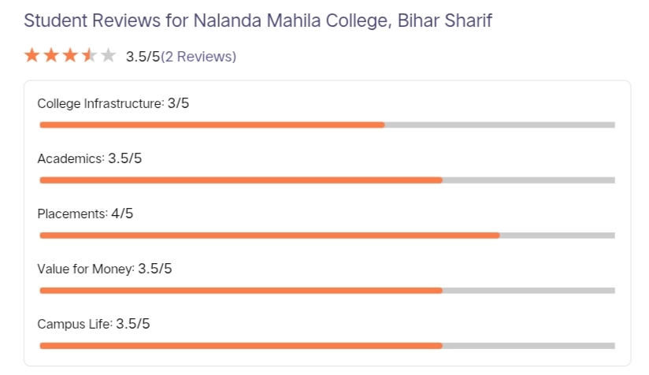

NALANDA MAHILA COLLEGE
Sherpur, Biharsharif, Bihar-803101
ESTD.1975 | 🎓A Constituent College Of Patliputra University [PPU] | PATNA
Sherpur, Biharsharif, Bihar-803101
ESTD.1975 | 🎓A Constituent College Of Patliputra University [PPU] | PATNA
✧ Nalanda Mahila College is situated in Biharsharif in Bihar state of India. Established in 1975, A constituent unit of Patliputra University Patna-20. Nalanda Mahila College offers 23 courses across 5 streams namely IT, Management, Science, Performing Arts, Arts. Popular degrees offered at Nalanda Mahila College include BA, BSc, BBM, BCA. Besides a robust teaching pedagogy, Nalanda Mahila College is also a leader in research and innovation. Focus is given to activities beyond academics at Nalanda Mahila College, which is evident from its infrastructure, extracurricular activities and national & international collaborations. The placement at Nalanda Mahila College is varied, with recruitment options both in corporates and public sector as well as entrepreneurship.
✧ Nalanda Mahila College, Bihar Sharif, is a Naresh-led college founded in the year 1975 and is one of the few renowned colleges in Bihar state, India. It is a constituent college for girls, offering multiple undergraduate programs at the degree level in various streams. With an enrolment of 5,419 students and 7 faculty members, the Nalanda Mahila College is purposed to provide a sound atmosphere for academic growth and personal development.
✧ The institution has numerous facilities that make life at the college very convenient for any student. Among others, there is a well-stocked library that can be termed a knowledge center since it makes available books, journals, and other digital sources of information. For lovers of sports, there are numerous athletic facilities within the college to ensure students keep a healthy balance between their studies and keeping their bodies fit. The whole campus is Wi-Fi enabled for students to pace themselves with the age of the fast-moving digital era. There are also well-maintained laboratories for practical learning in departments that would be relevant to the needs of the students. At Nalanda Mahila College, 15 courses are offered in 2 degree programs, all full-time. The popular courses the institute offers include BA, B.Sc, BBM, and BCA. This will be a broad spectrum of courses that will help students in the pursuit of different disciplines and follow their academic interests.
✧ Admission to Nalanda Mahila College is open and completely merit-based. Marks obtained in the qualifying examination of 10+2 or equivalent will be considered as an eligibility criterion for admission to any of the courses a college offers.
| TYPE | Undergraduate College |
| College Code | 215 |
| College Name | Nalanda Mahila College |
| Established | 1975 |
| Affiliations | Partliputra University [PPU] |
| State | Bihar |
| Location | Bihar sharif, Nalanda district, Bihar |
| Gender | Female |
| Official Website | nalandamahilacollege.ac.in |
| Accreditation / Recognition | NAAC Accredited |
| Phone | 6112358934, 6112232208, 9801498108 |
✧ Nalanda Mahila College in Bihar Sharif offers a variety of undergraduate programs, including Bachelor of Arts (BA), Bachelor of Science (BSc), Bachelor of Commerce (BCom), Bachelor of Business Management (BBM), and Bachelor of Computer Applications (BCA). Affiliated with Patliputra University, the college provides three-year degree programs including BA, BSc, BCA, and BBM.
✴ Bachelor Of Arts (BA) Programs
Core Subjects: Hindi, English, Urdu, Persian
Humanities & Social Sciences: History, Political Science, Economics, Sociology, Philosophy, Geography, Psychology, Home Science, and Music
✴ Bachelor of Science (BSc) Programs
Physical Sciences: Physics, Chemistry, Mathematics
Life Sciences: Zoology, Botany
✴ Professional & Vocational Courses
BBM (Bachelor of Business Management)
BCA (Bachelor of Computer Applications)
B.COM (Bachelor of Commerce)
✧ Nalanda Mahila College, Bihar Sharif, is one of the most respected and esteemed constituent colleges for women in Bihar. It offers a plethora of undergraduate programmes across various disciplines making It Inclusive for the female students of this region and their educational needs. The Nalanda Mahila College admission is based on merit so as to give equal opportunity to all deserving students in getting higher education. Nalanda Mahila College admission here is not complicated, and basically, it is looked into on the basis of the qualifying examination attained merit by candidates. Most undergraduate programmes require completion of 10+2 or by an equivalent examination of any recognised board. Admissions into other courses offered by the college would solely be based on marks obtained in this qualifying examination

✧ Nalanda Mahila College provides a comprehensive range of academic, recreational, and welfare facilities designed to support women's higher education. Key amenities include:
🏅 Sports
The college has sports facilities for all students.
Sports & Fitness:A sports complex and gymnasium supporting both indoor and outdoor activities (e.g., badminton, table tennis, kabaddi, weight lifting).
A sports complex featuring indoor and outdoor activities, including a gymnasium, table tennis, badminton, and a running track.
The college is having a properly maintained playground with many sports equipment for Indoor and outdoor games and sports such as Cricket. Badminton. Chess. Carrom Board. etc. College is also conducting yoga sessions for faculty and students under proper guidance.
📚 Library
The college has a library facility for all students.
Book Collection: A comprehensive collection of textbooks, reference materials, and journals covering Arts, Science, and specialized Women's Studies.
The college has an enriched library with multiple Subject books, Encyclopedia, Magazines, newspapers, Educational CDs, Journals, etc. The subject books are regularly being updated. In accordance with the syllabus. Students and faculty members use the resources available in the library.
🏫 Classroom
The college has clean classroom for all the students.
Classrooms: Spacious, well-ventilated, and adequately furnished lecture theatres.
The college is having properly furnished spacious classrooms along with projectors for students.
🩹 Medical/Hospital
The college has good medical facilities for all the students.
Medical Facilities: First-aid and basic health services to ensure student welfare and safety.
The college has a health center with a first aid facility for the students.
🧪 Laboratories
The college has a departmental-based laboratory facility for the students.
Laboratories: Fully equipped departments and science laboratories (Physics, Chemistry, Botany, Zoology, etc.) for practical, hands-on learning.
The college has departmental Laboratories.
Science lab: Science laboratory is equipped with various kinds of equipments/apparatus and chemicals for conducting various kinds of experiment in Physics/ Chemistry/Biology under proper guidance in the college.
Psychology lab: As per the regulation of the N.C.T.E. this institution has a psychology laboratory equipped with various verbal, non-verbal and performance tests. Students are given practical classes to make them acquainted with multiple types of psychological tests.
☕ Cafeteria
The college has a canteen facility for staff and students.
Canteen: A campus cafeteria that provides affordable, hygienic meals and refreshments.
The college has a canteen facility for staff and students.
🏛 Auditorium
The college has an auditorium facility for events and seminars.
Auditorium/Seminar Hall: Dedicated indoor spaces used for academic workshops, guest lectures, and cultural events.
The college has an auditorium facility for events and seminars.
💻 I.T Infrastructure
The college has an excellent IT Infrastructure for the students.
IT Infrastructure: The campus has a Wi-Fi-enabled environment and computer education centers that support digital literacy and practical IT sessions.
The college has an excellent IT Infrastructure facility for the students.

ADDRESS 🏠: Sherpur, Bihar-Sharif, Nalanda, Bihar-803101
PHONE NO. 📞: +91-6112358934, +91-6112232208 or +91-9801498108.
EMAIL ID 📧: Info@nalandamahilacollege.ac.in or nmcbiharsharif1975@gmail.com
WEBSITE 💻: Nalanda Mahila College Portal
Made by ❤ ➪ — Nidhi Kumari🍁